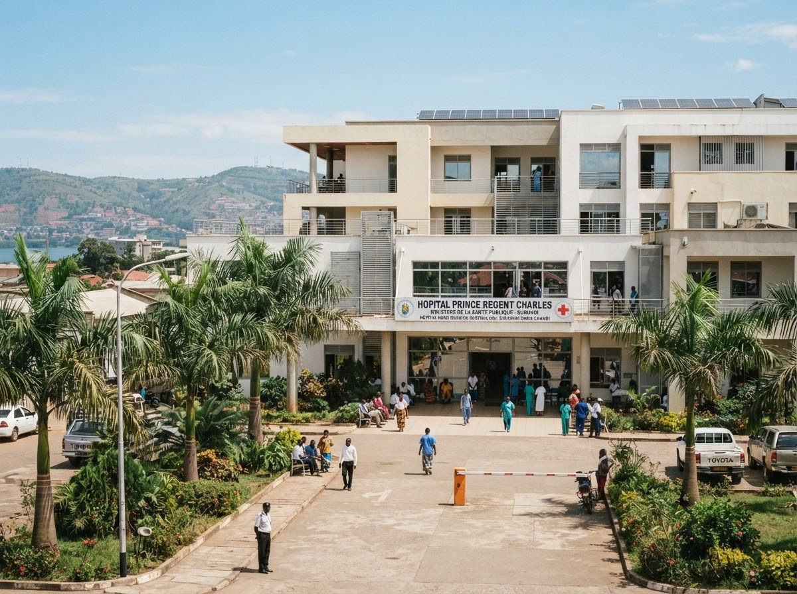

Urgence Médicale
Pour toute détresse vitale, accident grave, transfert d'urgence ou besoin immédiat d'une ambulance médicalisée dans votre province.
Plateforme centralisée du Ministère de la Santé pour la gestion des urgences vitales et la prise de rendez-vous médical immédiat.
Pour toute détresse vitale, accident grave, transfert d'urgence ou besoin immédiat d'une ambulance médicalisée dans votre province.
Trouvez un centre de santé, consultez les disponibilités des médecins spécialistes et réservez une consultation en clinique ou hôpital.
Intervention coordonnée avec les hôpitaux nationaux. Grâce à notre dispositif d'urgence mobile et à nos ambulanciers qualifiés, nous assurons un acheminement sécurisé vers le centre hospitalier universitaire ou régional le plus adapté.

Trois parcours vous accompagnent, du signalement d'urgence au suivi de vos soins programmés.
< 30s
Réponse à un signalement
Formulaire immédiat, géolocalisation automatique, orientation vers l'hôpital le plus proche. Aucune inscription préalable.
48
Centres de santé partenaires
Accès direct aux créneaux des médecins spécialistes et généralistes dans tout le pays.
100%
Données sous secret médical
Historique, ordonnances et rendez-vous centralisés, partagés uniquement avec les praticiens agréés.